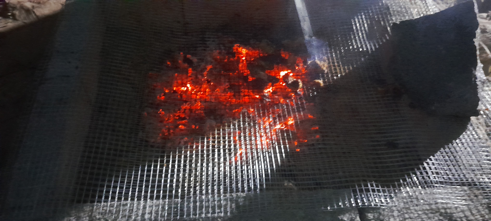

.jpg)
“Experience the Taste of the Tropics & Coast”
Thoppu Virundhu — literally, a ‘feast in the grove’ — is Valluvan Kudil’s open-air dining experience, set beneath tall coconut palms at Odhiur on the ECR, right on the Chennai–Pondicherry midway and close to the TTDC Mudhaliyar Kuppam Boat House. It is where our brand promise of Virundhombal comes fully alive: no walls, no rush, just fresh food, good company and the outdoors.
Just fresh meals
This is our house rule, not a slogan. Every order at Thoppu Virundhu is sourced and cooked fresh for that day — nothing is pulled out of cold storage. That is why we ask guests to order today for a fresh feast tomorrow, giving our kitchen the time to prepare everything the right way.
Menus are built around traditional and regional recipes, served the way they were meant to be — on banana leaves, family-style, with rice, curries, fry items and accompaniments customised to the group.
.jpg)
Traditional chicken curries and fry items, served family-style on banana leaves.
.jpg)
Rich, regional mutton recipes cooked fresh for your group, with rice and accompaniments.

The taste of the coast — fresh sea food specials, prepared the traditional way.
.jpg)
A kudil is more than a thatched roof — it is the original Tamil idea of hospitality, a simple home built to welcome guests. At Thoppu Virundhu, our seating is arranged in and around traditional palm-thatched kudils, with mats, low seating and open sides that let the breeze from the grove in.
As the sun goes down over the grove, Thoppu Virundhu turns into a live barbeque evening. Skewers of marinated chicken, mutton and seafood are grilled fresh over open coals, right in front of our guests — they can watch, wait and walk up for seconds while the evening winds down.
A visit is designed to be more than a meal. While the kitchen prepares your feast, the grove itself becomes a playground — a chance to slow down, play the games of a Tamil childhood and reconnect with the outdoors.
Free-hand support for all of these.
The games of a Tamil childhood.
Slow down and take in the grove.
Pre-booking is mandatory
6 persons
Pre-booking is mandatory — order a day ahead for a fresh feast.
Odhiur, ECR — Chennai-Pondy Midway, close to TTDC Mudhaliyar Kuppam Boat House.